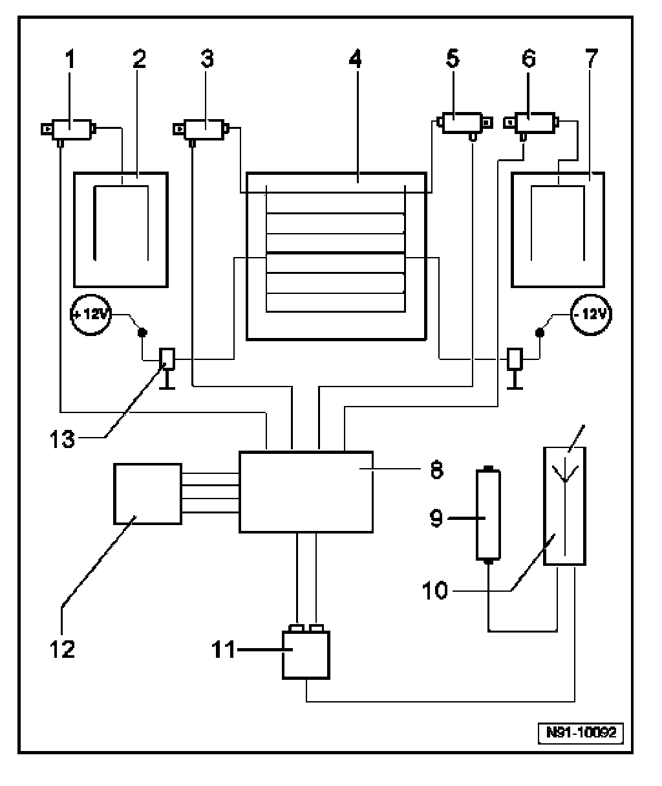

Antenna System, Layout
Antenna System, Layout

1. Antenna Amplifier -R24-
- AM/FM reception
- Installed above the left side window
2. Antenna -R11-
- Installed in the left rear side window
3. Antenna Amplifier 2 -R111-
- For FM reception
- Installed in upper section of rear lid.
4. Rear Window Antenna 1 -R130- & Rear Window Antenna 2 -R131-
- Installed in rear window
5. Antenna Amplifier 3 -R112-
- For FM reception
- Installed in upper section of rear lid.
6. Antenna Amplifier 4 -R113-
- For FM reception
- Installed above right side window
7. Radio Antenna 2 -R93-
- Installed in right rear side window
8. Antenna Selection Control Module -J515-
- Behind rear section of molded headlining.
9. Operating Electronics and Telephone Control Module -J412-
- Not applicable to USA/CDN
10. Navigation System (GPS) Antenna -R50- &Radio/Telephone Antenna -R51-
- Installed in right front fender above headlight assembly
11. Radio -R- or Radio/Navigation Display Control Module -J503-
12. Tuner for Navigation/TV -J415-
- Not applicable to USA/CDN
13. Low pass filter
- Suppresses reception interference when rear window heater is switched on.
- Integrated with wiring harness.